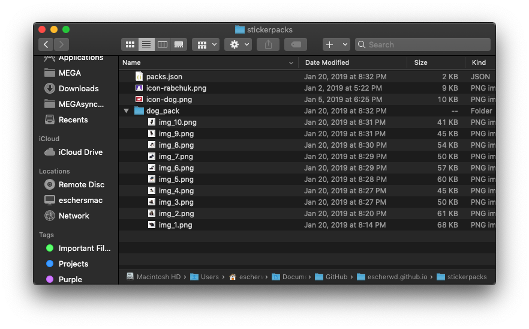
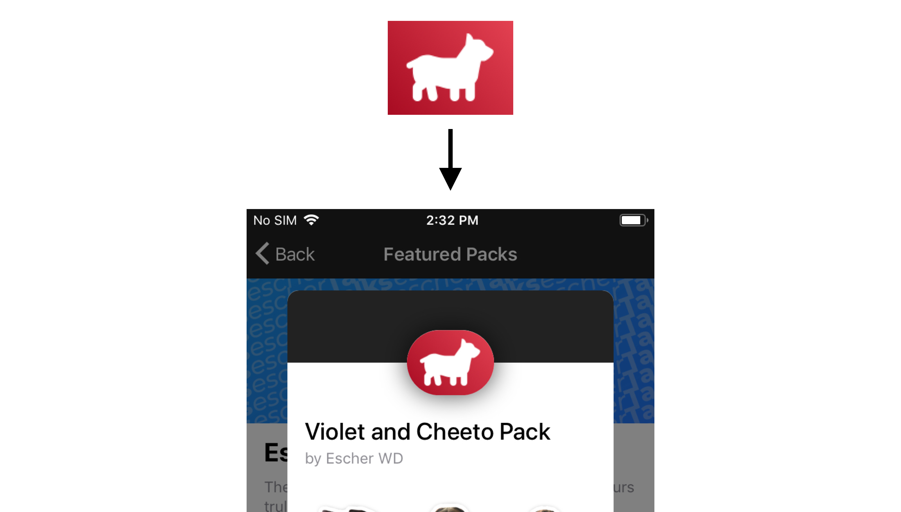
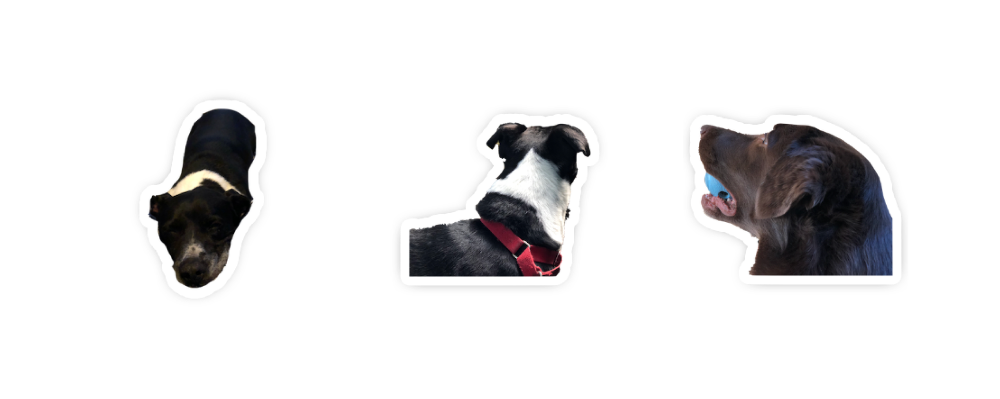

Sticker Packs
Official Guide
Stickerpacks, a new feature to the upcoming escherTalks app, are an easy and fun way to express
yourself. escherTalks stickerpacks work similarly to iMessage or WhatsApp stickerpacks, whereas
users can create their own and share them. Where this differs however, is the way your stickers are
hosted.
With escherTalks stickerpacks, you pretty much run your own sticker store.
1. How Sticker Repositories Work
Here is the template for what the JSON repository file should look like:
{
"name": string,
"creator": string,
"social": string,
"stickerpacks": [
{
"title": string,
"id": string,
"description": string,
"icon": string,
"stickers": [
string, ...
]
}, ...
]
}
Here is an example of what my personal stickerpack repository looks like. The consistantly updated
version is hosted at escherwd.com/stickerpacks/packs.json for
reference.
{
"name": "Escher's Sticker Repository",
"creator": "Escher WD",
"social": "@escherwd", // Your escherTalks username
"stickerpacks": [
{
"title": "Rabchuk Pack",
"id": "ewd001", // All IDs in your pack must be different
"description": "A Rabchuk Sticker Pack! Inspired by r/abchuk.",
"icon": "http://escherwd.github.io/stickerpacks/icon-rabchuk.png",
"stickers": [
"https://imgur.com/lw25IRQ.jpg",
"https://imgur.com/leuK6W2.jpg",
"https://imgur.com/i2kDQZF.jpg",
"https://imgur.com/68G3g7T.jpg",
"https://imgur.com/LgdNm2x.jpg",
"https://imgur.com/C2Zbs6B.jpg",
"https://imgur.com/emBxrvq.jpg",
"https://imgur.com/aIsoVkK.jpg",
"https://imgur.com/ElDDaME.jpg",
"https://imgur.com/DMMM7WS.jpg"
]
},
{
"title": "Violet and Cheeto Pack",
"id": "ewd002",
"description": "The official mascots of escherTalks come together for an exclusive stickerpack!",
"icon": "http://escherwd.github.io/stickerpacks/icon-dog.png",
"stickers": [
"http://escherwd.github.io/stickerpacks/dog_pack/img_1.png",
"http://escherwd.github.io/stickerpacks/dog_pack/img_2.png",
"http://escherwd.github.io/stickerpacks/dog_pack/img_3.png",
"http://escherwd.github.io/stickerpacks/dog_pack/img_4.png",
"http://escherwd.github.io/stickerpacks/dog_pack/img_5.png",
"http://escherwd.github.io/stickerpacks/dog_pack/img_6.png",
"http://escherwd.github.io/stickerpacks/dog_pack/img_7.png",
"http://escherwd.github.io/stickerpacks/dog_pack/img_8.png",
"http://escherwd.github.io/stickerpacks/dog_pack/img_9.png",
"http://escherwd.github.io/stickerpacks/dog_pack/img_10.png"
]
}
]
}
This example shows off two different ways of hosting the stickers themselves. In the "Rabchuk Pack",
all the stickers are located on imgur, which can be helpful for lightweight websites who don't want
to host the images. The second example has the stickers located in the same website. The way you
organize it is up to you, but hosting the images on your own site are easier to manage.
Icons
for both packs are hosted on my website as well, but it wouldn't be a problem if they were on imgur
as well.
Here is a screebshot of how my repository is organized, I would reccomend this way
but the locations of the files really don't matter. Creating a seperate folder for each pack is
suggested.

2. Stickerpack Icons
Stickerpack icons are important because they are the first thing the user sees before looking at your
pack. Icons should be simplistic and keep to minimal colors and gradients.
When making your icons, never round the corners. The app takes care of that.

Icons should have a 4 x 3 size ratio. The size isn't super important, but try to keep it on the smaller side for faster loading times. My icons are all 90px by 120px.
Supported formats are .png, .jpg, .jpeg, and .gif
3. Stickers
Stickers follow similar rules to the icons. Quality here though is definitely more important than small file sizes, as the user will only have to download these stickers once. Please note, escherTalks does nothing to manipulate the photos, so if you want shadows and borders around your stickers you will have to add them yourself. I would reccomend Sketch or Affinity Designer for this.
Supported formats are .png, .jpg, .jpeg, and .gif
All of my stickers fit into a 250px by 250px box, which is even a little on the small side. Here are some examples of my stickers:

Stickers are really all up to you, I don't really have many rules to assert here, just keep it PG, I guess
4. Publishing
Stickers can be installed by your friends immidiately after you upload the JSON repository file with working image URLs. If anything is missing or an image URL isn't correct something might go wrong (I'm too lazy to really find out), so please make sure everything is correct.
Inside the escherTalks app, under the Explore page, there is an 'All Packs' button. Here you can add your repository url (should end with .json) with the plus at the top right and begin to download the packs inside of it. For example, my repository url is http://escherwd.com/stickerpacks/packs.json.
You can also email a certain pack to me if you want it featured on the explore page, which would definitely boost your exposure. Users can add your repo from featured packs by clicking "More Packs by (insert name here)" at the bottom.